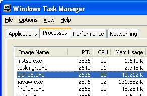

Understanding Port-in-Use Problems
Some users of the Application Server have
seen messages that say a port is in use. This topic describes the use
of built-in tools in Windows XP and Windows
2003 that determine what process is using a specific TCP/IP port. If
you are using some other version of windows, you may be able to use a
third-party tool, such as fport,
which can be downloaded from http://www.foundstone.com/index.htm?subnav=resources/navigation.htm&subcontent=/resources/proddesc/fport.htm.
At a Windows command prompt, run the command netstat
-o. This will output a list of ports, along with the PID (process
ID) that has that port open. The output looks something like:
|
C:\Documents and Settings\Administrator>netstat -o |
The sample output above indicates that the local port 80
is being used by process ID 2636.
To determine which executable is running as a process ID:
Open the Windows Task Manager.
Switch to the Processes tab.
Select View > Select Columns.
On the resulting screen, make sure "PID (Process Identifier)" is checked and then click OK.
Now click on the PID heading to sort the entries by PID. The sample screen below shows that process ID 2636 is alpha5.exe, which indicates that the Application Server is using port 80.

Limitations
Web publishing applications only.